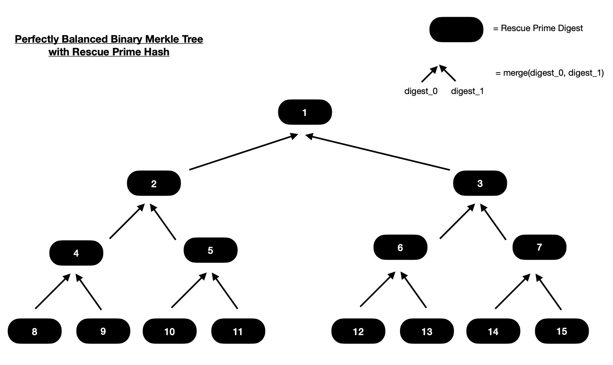
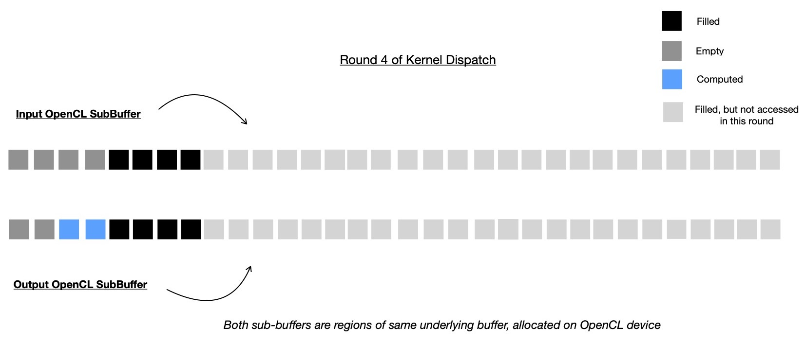

For last few weeks I've been spending time on accelerating Zk-STARK friendly Rescue Prime Hash Function so that large number of hash computations can be offloaded into accelerators i.e. OpenCL backed CPU, GPGPU etc. As current implementation of Rescue Prime Hash function doesn't lend itself well for data parallel acceleration, I've majorly concentrated in running multiple instances of Rescue Prime Hash function on independent and non-overlapping input. I can simply say, given N-many independent inputs Rescue Prime Hash is computed N-many times, producing N-many digests, in-parallel. Though with this individual computation of Rescue Prime Hash doesn't end up being faster, but total throughput definitely improves. During this process of accelerating Rescue Prime Hash function, I also explored possibility of vectorizing Rescue Permutation steps using both OpenCL vector intrinsics and nightly Rust's portable-simd feature. But today I'm not going to be talking about Rescue Prime Hash function and its implementation itself, instead one application of that --- Merkle Tree Construction using Rescue Prime Hash function. Some other day I'll take up Rescue Prime Hash function; for now if interested you should be looking into following references. Note, all following implementations I'm linking are using F(264 - 232 + 1) as prime field to operate on.
I'd like to clarify that for this work I'm assuming I've access to OpenCL accelerated Rescue Prime Hash function merge(digest_0, digest_1), which takes two Rescue Prime digests and produces single Rescue Prime digest. For reference you should check out this OpenCL kernel, which exactly does that. With this, I can say following Merkle Tree construction technique can be generalised to other cryptographic hash functions offering acceptable security and collision resistance, where two hash digests of respective hash function can be supplied as input and it produces another hash digest as output. For this work I'm going to use aforementioned prime field F(264 - 232 + 1), so each element of prime field can be represented in native 64-bit unsigned integer i.e. uint64_t. Input to Rescue Prime hash's merge function is 512-bit which is interpreted as 8 prime field elements or more specifically two Rescue Prime hash digests placed next to each other, each of width 256-bit ( read 4 prime field elements ). Output of Rescue Prime hash function i.e. digest is of width 4 field elements, which takes 256-bit to represent.
Let's dive into Merkle Tree construction.
In following explanation, I design one function which takes N-many Rescue Prime Digests, which are interpreted as leaves of Merkle Tree and as output that function produces all intermediate nodes of Merkle tree. These intermediate nodes are nothing but Rescue Prime digests of two immediate children nodes. I consider perfectly balanced binary Merkle Tree i.e. each non-leaf node has exactly two children and all leaves are living at same depth. Naturally N can only be power of 2. That means with N-many leaves provided, I should construct all intermediate nodes of a Merkle Tree with log2N levels or in other words Merkle tree of height (log2N + 1). So there should be (N - 1)-many intermediate nodes to compute of Merkle Tree with total (2N - 1) nodes. Let's take an example for better understanding.

In above diagram, I've a binary Merkle Tree with 8 leaves. Each consequtive pair of leaves
are merged ( read hashed ) together for obtaining deepest level of intermediate nodes i.e. intermediates living just above leaves.
Similarly those intermediate nodes are paired together for hashing and obtained digests will live on intermediate node
layer just above it. This procedure continues until we reach root node. If interested you can dig deep into Merkle Tree construction,
a starting point can be this.
Notice how tree nodes are numbered, which are nothing but indices of intermediate and leaf nodes in a 1D container array.
Here I'm assuming both input digests ( read tree leaves ) and output intermediate node digests are kept in same array.
Now assume that as input following array is provided, which are considered as leaves of Merkle Tree.
Output should have (N - 1)-many intermediate node digests.
Output should be placed in an one dimensional array of length N such that 1st element ( i.e. at index zero ) is empty
( which is why there's no node tagged with index 0 in above diagram ),
2nd element is obtained by hashing elements at index 2 and 3 ( in ordered fashion ). Similarly element at index 2 of output array
is computed by hashing elements at index 4 and 5. This means element at index i of output array is computed by hashing elements
at index (2 * i) and (2 * i + 1), generally speaking. This also means, I've to start filling output array backwards.
First I'll pair consequtive elements in input array of length N and compute Rescue Prime Hash ( read merge(digest_0, digest_1) function )
for each pair. This should give me (N >> 1)-many intermediate nodes, who live just above leaf nodes.
In next round of computation I'll calculate Rescue Prime hashes on intermediate nodes computed during previous round. I'll pair consequtive intermediate nodes and compute Rescue Prime merge function on them for getting (N >> 2)-many new intermediate nodes. After completion of this round, I've ((N >> 1) + (N >> 2)) -many intermediate node digests.
Notice only 2nd element of output array is non-computed still, which is root of Merkle tree we're computing. Root of tree is nothing but digest of two immediate subtrees. It can be computed as below. This way I've computed ((N >> 1) + (N >> 2) + (N >> 3)) -many intermediate nodes of Merkle Tree, in log2N rounds.
When N is large, say 224, it's beneficial to compute each round of Merkle Tree construction in parallel.
There'll be 24 rounds and during each round given that all intermediate nodes of previous round are already computed
and available for read-only access, it's easy to just pair consequtive intermediate nodes computed during previous round
and apply Rescue Prime merge function on them, which produces intermediate nodes to be used
during next round.
For N-many leaves provided as input to one OpenCL kernel, in log2N rounds
total (N - 1) -many intermediate nodes to be computed. Each of these rounds can safely run in-parallel
but round k is data dependent on round (k - 1). Intermediate nodes computed during round k are used as input during
dispatch of round (k + 1). That means OpenCL event based dispatched kernel dependency management is required so that compute
dependency graph can be inferred by OpenCL runtime and no data race happens.
In OpenCL, I'll pass input array of length N as an OpenCL buffer ( read cl_mem )
to kernel, which computes intermediate nodes of Merkle Tree. Output array which is also passed as an OpenCL buffer,
is also of length N, where first element will be kept empty and it'll never be touched ( read accessed ) by any dispatched kernels.
Though output buffer is of length N, all (N - 1) -many intermediate nodes can't be computed in a single
dispatch. Total log2N -many dispatches will be required.
During first dispatch only (N >> 1) -many intermediate nodes to be computed, which are living just above leaf nodes.
This time input buffer of length N is accessed in read-only mode and last (N >> 1)-many places of output buffer
is accessed in write-only mode. This is the only kernel dispatch round when input buffer is used, in all upcoming kernel
dispatch rounds, non-overlapping regions of output buffer will be used for both input and output purposes.
Note, size of output buffer region used for input is always twice the size of subbuffer used
for writing intermediate nodes computed during that round. It can be trivially figured out due to the fact
that each call to merge function merges two chidren nodes into single parent node.
I'll use OpenCL subbuffers for accessing only subsection of output
buffer required during certain kernel dispatch round. For one kernel dispatch round, other than first one, output buffer will be splitted into
two non-overlapping ( though living next to each other ) subbuffers, where one is input ( accessed with read-only flag ) and another one is output ( accessed with write-only flag ) for that round.
In next kernel dispatch round, previous round's write-only subbuffer region is accessed in read-only mode
and appropriate region of output buffer is accessed in write-only mode for placing computed intermediate nodes.
Let me take a diagrammatic example for better demonstration purposes.
I allocate two OpenCL buffers on target compute device, one for storing input digests, representing leaves of tree
and another one for storing all computed intermediate digests of Merkle Tree. These two buffers are supplied to Merkle Tree construction kernel.
There will be other inputs required which are hash function specific and I'm skipping them now. To be more specific in Rescue Prime hash function
it needs to have read-only access to MDS matrix, Round Key constants, to be applied on hash state during Rescue Permutation rounds.
I'm going to demonstrate construction of Merkle Tree with 32 leaves, so there'll be 5 rounds i.e. 5 kernel dispatches will be required. And these 5 dispatched kernels
are to be executed in-order due to inherent data dependency in hierarchical structure of binary Merkle Tree.
In very first round of kernel dispatch, original input buffer is used as input ( read-only mode ) and marked half of output buffer is taken as subbuffer ( write-only mode ) and used for writing output of that round, which will be input for next round.
In second round of kernel dispatch, original output buffer of length N ( = 32, here ) is splitted into two non-overlapping regions i.e. subbuffers. Previous round's output subbuffer region is accessed in read-only mode this time and marked portion of output buffer is accessed as write-only subbuffer where this round's computed digests ( read intermediate nodes ) are written, which are going to be accessed in read-only mode during next kernel dispatch round.
In third round, 4 intermediate nodes are computed by reading from subbuffer which represents 8 intermediate nodes ( computed during last round ), living just below this round's computed intermediate nodes.
In this round, 3rd round's output subbuffer region is accessed in read-only mode for computing 2 intermediate nodes, which are root nodes of immediate subtrees of Merkle Root. Note, Merkle Root is yet to be computed and placed at index 1 of output buffer, which is why it's shown as empty in following diagram.
And finally in round 5 of kernel dispatch, root of Merkle Tree is computed by accessing two intermediate nodes, computed during round 4, which are Merkle Root's immediate subtree roots.
With this our OpenCL kernel has computed all intermediate nodes ( 31 in number ) of Merkle Tree with 32 leaves, in 5 consequtive rounds, where each round safely executed in parallel.
This is time to clarify how much memory does it actually consume to store 32 abstractly
represented cells in input/ output buffer. Each cell is abstract representation of one Rescue Prime digest which is
256-bit in width or in other words 4 contiguous prime field elements, where each element can be represented using u64.
Total of 32 * 256 -bit = 1024 bytes of memory is allocated for each of input and output buffer. Now remember, I had to
split original output buffer into non-overlapping subbuffer regions for read-only and write-only access during several kernel dispatch
rounds, which is fine as long as subbuffer starting memory address is properly aligned with
OpenCL device's base address alignment requirement. For more info you should look at Khronos OpenCL man page
here and search for error code
CL_MISALIGNED_SUB_BUFFER_OFFSET.
For querying what is OpenCL device memory base address alignment requirement, I use
this function.
If you've clinfo tool installed, that can also be used for checking all available device base address alignment requirements like below.
We're interested in Alignment of base address field, but there're two of them because two devices are available in my system. As I'm planning to run this kernel on Nvidia Tesla V100 GPGPU, which is enlisted first when clinfo is run, I'll just consider following from above output.
This means I can't create a subbuffer from whole output buffer when origin of subbuffer is not aligned to 512 bytes. To be more specific, I can't create one subbuffer which originates at some index that can't be evenly divided by 512. Let's now go back to previous demonstration, where I constructed a Merkle Tree from 32 leaves, and explore deeply to ensure that all kernel dispatches will execute as envisioned.
In round 1, whole input buffer is used in read-only mode and half of output buffer is used for writing computed intermediate nodes.
In second round, previous round's output subbuffer is used as input subbuffer and
this round's input subbuffer halves in size; details below.
And here it all breaks. Looks like I can't create subbuffer region in second round itself, because
output subbuffer of second round is not properly aligned with Nvidia Tesla V100 base memory address alignment
requirement ( because 256 % 512 != 0 )
That means, as I was planning to dispatch kernel 5 times with different non-overlapping subbuffer regions,
to be used as input/ output for that round, I can't do that. And as an alternative I've to compute some intermediate
nodes sequentially. I showed I have to stop after round 1 kernel dispatch in above case and there're still 15
more intermediate nodes to compute. I write one kernel where only one OpenCL work-item computes all remaining
intermediate nodes at tip of Merkle Tree by iteratively going through them in order. In order to avoid device-to-host data transfer
when whole Merkle Tree is not yet constructed, I have to use sequential implementation of kernel.
An optimization experiment --- one can attempt to do data transfer to host and compute remaining intermediate nodes in parallel ( as I primarily proposed )
on host itself where memory base address alignment issues are absent because pointer arithmetics can be comfortably used
for accessing subregions of whole array, allocated on host for holding all intermediate nodes ( either computed/ to be computed ).
This is the kernel
I wrote for sequentially computing tip of Merkle Tree.